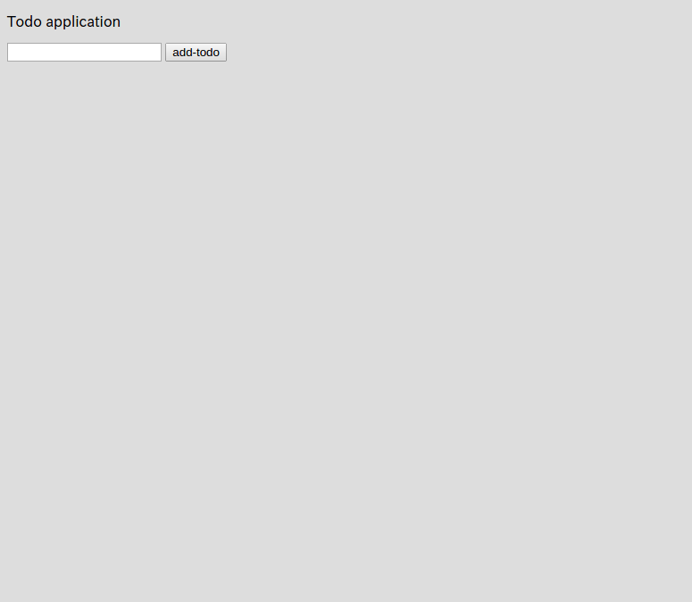

3.2.フォームでデータを送信
では、先ほど作成したView（index.gsp）から、Controllerにデータを送信する方法を見てみましょう。
なお、Todoという言うことは最低限Todoを入力する1つのテキストボックスが必要ですね。
grails-app/views/index/index.gspを以下のようにします。
<!DOCTYPE html>
<html>
<head>
<meta charset="UTF-8">
<title>ToDo</title>
</head>
<body>
<p>Todo application</p>
<g:form controller="index" action="formTest">
<g:textField name="todo"/>
<g:submitButton name="add-todo">Add Todo</g:submitButton>
</g:form>
</body>
</html>
では、http://localhost:8080/index/indexにアクセスしてみましょう。

フォームが表示されていますね！
<g:...>で表記されている部分が、GSPで利用できる特種な記法です。
上記のGSPは、
<form action="/index/formTest" method="post" >
<input type="text" name="todo" value="" id="todo" />
<input type="submit" name="add-todo" value="add-todo" id="add-todo" />
</form>
というHTMLに変換されてブラウザに返されます。
つまり、別にGSPタグを利用しなくても、普通にHTMLタグを記述しても問題ありません。
ただし、IDEを要している場合は、もしController名やアクション名が変更になった場合には、<g:form controller="index" action="formTest">の部分も自動的に書き換えてくれたりするので、個人的にはGSPタグが利用できる場合にはGSPタグを利用するのがオススメです。
では、続いてControllerにActionを追加しましょう。 grails-app/controllers/mytodo/IndexController.groovyを以下のようにしてみます。
package mytodo
class IndexController {
def index() { }
// 以下を追加
def formTest() {
String todoName = params.todo
render todoName
}
}
では、http://localhost:8080/index/indexにアクセスして、適当に何か入力して「add-todo」をクリックしてみてください。
画面が変わって、自分が入力した内容が画面に表示されていますね？
おめでとうございます！今クライアント（ブラウザ）からデータをアプリケーションサーバ（Grails）に送信してそのデータを表示することが出来ました！